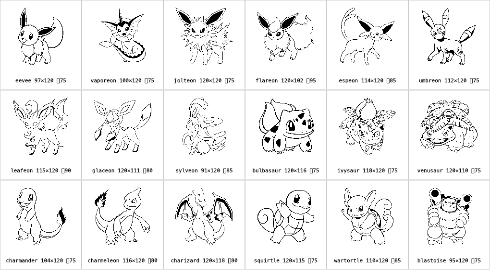

全 18 只 1-bit 烘焙成品 · 设备真实渲染
Dream World 矢量 → 4x 超采样 → 每只自动阈值校准

第 1 行 = 伊布 + 8 个进化型（水/雷/火/太阳/月亮/叶/冰/仙子伊布）
第 2-3 行 = 御三家三条进化线
每只标注像素尺寸 + 自动选定阈值。
尾焰、炮管口、花心的纯黑是物种本身的深色特征
，非渲染黑团。
逐只看一遍——有想单独调的（某只太深/太细/某部位）现在说；都 OK 我就入库，进
确认项 ②
。